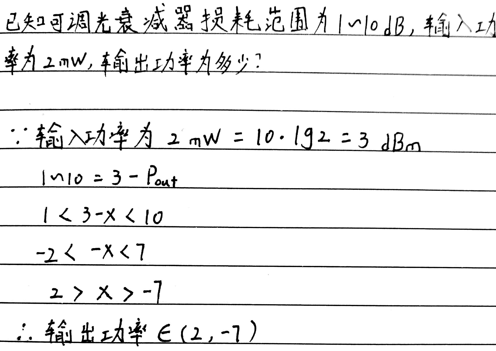

让我们先来了解一下什么是db (因为后面要大量用到它，如果不知道它是什么东西，对于程序员来讲，会睡不着覺的)
中文: dB是一个比值，是一个数值，是一个纯计数方法，没有任何单位标注。
The decibel (symbol: dB) is a unit of measurement used to express the ratio of one value of a power or field quantity to another on a logarithmic scale, the logarithmic quantity being called the power level or field level, respectively.
It can be used to express a change in value (e.g., +1 dB or −1 dB) or an absolute value.
In the latter case, it expresses the ratio of a value to a fixed reference value; when used in this way, a suffix that indicates the reference value is often appended to the decibel symbol.
For example, if the reference value is 1 volt, then the suffix is "V" (e.g., "20 dBV"), and if the reference value is one milliwatt, then the suffix is "m" (e.g., "20 dBm")
看起来是一种数值的表示方法，用来表示相对值。比如2dB与1dB，表示: 2dB的实际功率 是 1dB实际功率 的2倍。
功率 = Power
无(电)源光器件 (Passive Optical Device)
1. 光纤连接器 (optical fiber connector): 接头
2. 光衰减器 (optical attenuator): 用来减少光功率，单位dB。该器件类似电路里的电阻。
螺丝，顺时针“紧”，逆时针“松”
所有接受器件都有接受范围
近距离传输，衰减可近似于0
光发射机与光接收机的功率并不一样，发射机比较大，接收机比较小，所以要用衰减器对发射信号进行处理，让它变小假设，，那么夹在中间的
3. 光耦合器 (optical couplers): 同一波长，分光 或 合光
平均分光
的分光器，光功率
下降的分光器，光功率
增益(上升)功率 -> dB:
4. 波分复用器 (optical fiber wavelength division multiplexer): 不同波长的分离与合并
5. 波长转换器 (optical transponder unit): 波长转换，如 1310 -> 1550
6. 光学隔离器 (optical isolator): 隔离反向反射光
7. 光环形器 (optical circulator): 转发(重新发射)反向反射光； 换一条路再发
8. 光开关(optical switch): 通 与 断
测光衰减器
理论上:
光源(optical source) --- 光衰减器 --- 光功率计(power meter)
光源器上的读数不可靠，所以
实际上:
光源 --- 光功率计(把它的读数看作实际光源功率)() --- 光衰减器 --- 光功率计()
如果把
衰减器换为光纤。设两头为A、B端，你需要把 A 到 B 测一遍，B 到 A 再测一遍，取平均值。(我也不知道为什么光纤会有这个特性)
说了一大堆，还是不知道它是什么意思？ Let's continue!
与 都是光功率的单位，但由于光功率的数值太大，不容易让人看出相对关系，所以人们使用
， 表示功率(power)， 指以10为底的
如此一来，如果你知道了光纤两端(如A、B)的具体功率值，你就可以直观地用单位看出两端之间的差异(是增加、增益还是减少、衰减)
这个由“减法”得到的值，足以让我们看出信号是增加还是减少了
Question and Answers
